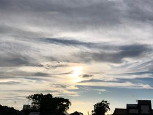

うるがいの話 ある日
最新:
HTML5
うるがいとは 前提知識です
画像をクリックすると『うるがいの話』サイトを表示します

うるがい(ｳﾙｶﾞｲ urugai)とは、『もずくがに』の名前でとても大きくなります。
たながー（ﾀﾅｶﾞｰtanagaa）とは手長えびのことで、何種類かあり大きいのは車
エビぐらいになります。
ぶながー(bunagaa)とは、赤い髪の毛、赤い身体、そして身長は１ｍ２０ｃｍ
ぐらい、川の蟹を食べているの目撃された。場所は沖縄県国頭郡大宜味村のと
ある村僕の隣近所に住んでいる爺さんから、聞いた話です。
2021年06月24日 (木）HTML5
16:28

HTML5とはHTMLのバージョン5、改訂第5版のことです。初期のHTML1が開発
されたのが1993年、それからバージョンアップを重ね1999年12月にバージョ
ンアップされたHTML4が開発されました。このHTML4が昨今のホームページを
作る言語としてWEBを支えてきました。そして2014年10月28日にHTML5が発
表され、現在ではホームページ制作に欠かせないものとなっています。つまり
HTML＝HTML5であり、現在最新のHTMLのバージョンである、ということです
ね。（引用）
手元には図書館から借りている「10日でおぼえるHTML5入門教室」（ちなみ
に、10日は絶対無理でっせ！、軽く一か月はかかるべ）、「HTML&CSS 標準
デザイン講座【HTML5&CSS3対応】がある。
このホームページを作成したのは、2003年6月27日,Niftyのホームページ作成
ツールを利用して作った（１９年前になる）。当然HTML4をベースにした言語
で作成している。図書館の本を読み、ネットを検索しているとウーン見直さな
いといけないかな。
1.文字に色を付けるのにを利用
尚、<FONT>タグは｢非推奨要素｣となっています。フォントに関する指定には
できる限りスタイルシートを使用するようにしてください。
2.ページ内リンクをaタグへのname属性を使用
【HTML】aタグへのname属性はもうやめよう。ページ内リンクも動かずAMP
エラーが出る。少し古いHTML知識をお持ちの方だと、ページ内リンクのaタグ
へid属性と一緒にname属性を入れる方も多いでしょう。
ブランクのあるコーダーに気をつけていただきたいのですが、HTML5ではaタ
グへのname属性は非推奨となっており、Firefoxなどモダンブラウザではすで
に動作しなくなっています。
おおお！、厳しい指摘、ということで改善作業を始める。まだ、標準語を学習
している途中なのでいきなり方言を完全に無くすことは厳しい。そこで最新の
日をプログラムでHTML5へ変更することとした。このため、無料ホームページ
スペースを利用した新しサイトを作った。（一応リンクしてあるが、クリック
しなくてもいいと思う）。
1.FC2ホームページ スマホでは広告が表示される！ 、やや遅い
https://urugai.web.fc2.com/
『わかばちゃんと学ぶ Webサイト制作の基本〈HTML5・CSS3〉』を実践
６月１２日にサイトを登録
2.Github Pages
https://urugai27.github.io/
『改訂２版 わかばちゃんと学ぶＧｉｔ使い方入門』を実践、昨日登録
3.Bitbucket
https://urugai04.bitbucket.io/
『初版わかばちゃんと学ぶＧｉｔ使い方入門』を実践、今朝登録
いずれも、httpsである。IT業界では「 セキュリティがしっかりしている」と
いった意味で使われている。niftyのこの無料ホームページスペースは、無料
だからかhttpなのだ、オヨオヨよ。